Nomads · art book
Expedition Morning
How the look was found: the steps a game art team takes to settle an aesthetic, applied to the SimCity-style island. Each step fed the next, and the final screens are at the bottom.
01The brief
You answered four questions. They are the brief every later decision was checked against.
| Feeling | "A world full of possibilities and adventure." |
|---|---|
| Era | Open, so the art director picks: SimCity 2000, SimCity 3000, or Transport Tycoon and RollerCoaster Tycoon. |
| People | Small, like SimCity. The land is the star. |
| Screen | Just the world, no interface. |
02Reference board
A reference board collects the work you are standing on and names exactly what to take from each piece. Copying a whole look is not the point.
| SimCity 2000 | Land sculpted from slope tiles on whole-number heights, earth showing at the map's cut edge, and water animated by color cycling. Take: slope tiles, the cut edge, color-cycled life. |
|---|---|
| Transport Tycoon | Simon Foster's art was called "the perfect compromise between clarity and detail", and in it nothing is static. Take: a crisp tile set and a world that moves. |
| RollerCoaster Tycoon | Tiny people who read by color and by what they are doing, and scenery dressed in dense clusters. Take: small, busy people. |
| SimCity 3000 | Lusher trees and softer shading. Take: rich forest masses. |
| Populous | The land as a god's sculpted landmass. Take: the island as a jewel on the sea. |
| The Settlers II | Workers on paths between home and resources. Take: paths that tell you where life goes. |
| Age of Empires II | Forest clumps with strong silhouettes, banded shallows, fish. Take: forest massing and readable shores. |
| eBoy "Pixorama" | Dense pixel worlds full of tiny stories. Take: a reward for looking closer. |
| Disney's "weenie" | A landmark that pulls you toward it. Take: every view shows somewhere you want to go. |
| Isometric craft | 2:1 lines, vertical heights, one light from the upper left, three tones a face. Take: the ground rules. |
03Visual pillars
Pillars are three to five short rules. When two options look equally good, the one that serves the pillars wins.
Every view shows somewhere you have not been yet: a peak, a lake, smoke, birds over a headland.
Every tile reads at a glance: one light, three tones a face, distinct silhouettes. It must survive a squint.
Nothing is still: smoke, surf, fish, deer, birds, people at work.
Detail gathers into little stories, with quiet ground between them.
Avoid: even noise, cliffs everywhere, interface, uniform scatter, neon saturation.
04Exploration: palette
Thumbnails are quick side-by-side variations, cheap enough to throw away. Six palettes were drawn on the same valley and island.
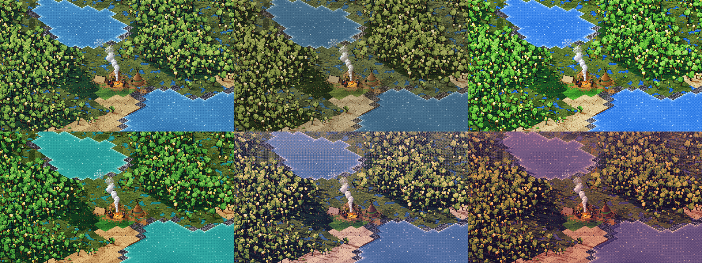
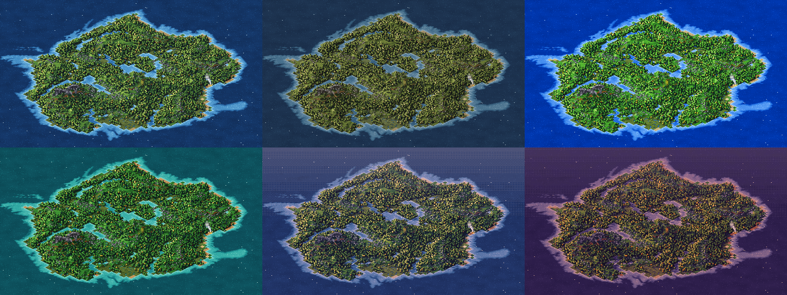
- SimCity 2000: authentic but drab, and it fails "possibility and adventure". cut
- Transport Tycoon: the clearest, but the grass goes neon. take its clarity
- Lush: the turquoise shallows instantly say "island adventure". take its water
- Dawn: the haze gives depth, but it turns the trees muddy. take its light and haze
- Dusk: moody rather than hopeful. cut
05Readability check
Two standard tests. Grayscale shows whether shapes read without color, and squinting (a heavy blur) shows what the eye finds first.
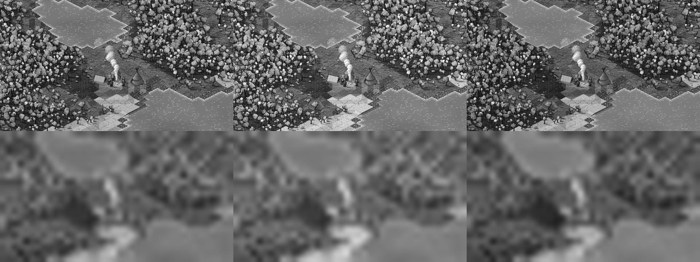
The fix is a value order: deep water darkest, then forest interiors, forest edges, meadow and sand, with foam, smoke and firelight brightest. The camp is the warmest, brightest point on screen.
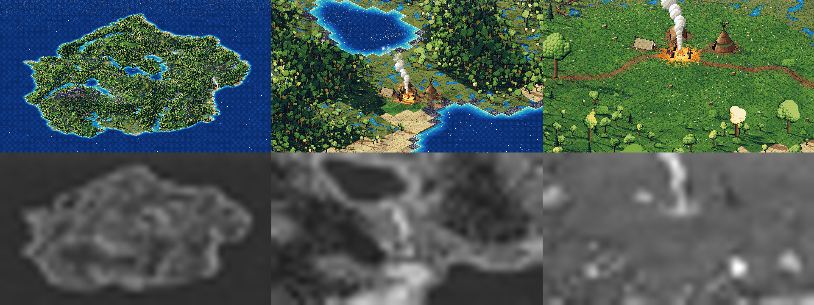
06Exploration: pixel size and density
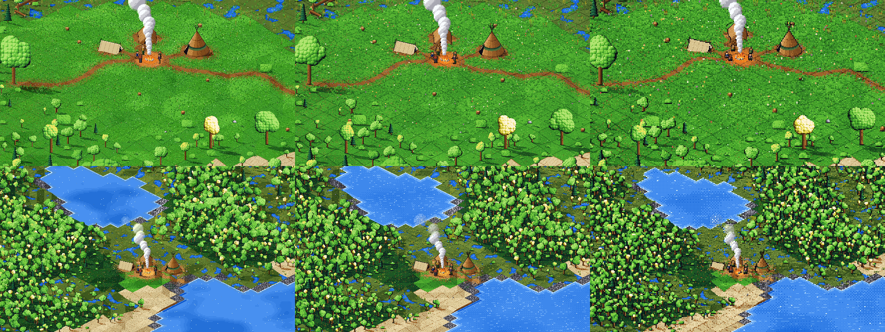
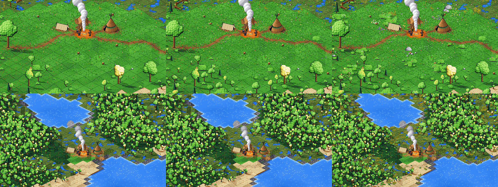
07Direction: Expedition Morning
The chosen look takes Transport Tycoon's clarity, lush turquoise shallows and dawn's warm low sun and haze, with the value order from step 05. It has 2x pixels, clustered dressing, a landmark in every view, a living world and no interface. It is the first morning of an expedition: bright, clear, and full of places to go.
08Style guide
A style guide pins the rules down, so every new asset looks like it belongs.
| Projection | 2:1 isometric tiles on whole-number heights; slope tiles everywhere, rock faces only where the ground is really steep, and real cliffs only on sea headlands. |
|---|---|
| Pixel | A 640x360 art canvas shown at 2x. Every pixel comes from one fixed palette of named color ramps (charted under the sprite sheet), and gradients come only from a 4x4 ordered dither. |
| Light | One low morning sun from the upper left, with long shadows to the lower right, warm gold on lit faces and cool blue-violet in shade. A soft haze toward the horizon and mist in the hollows. |
| Value order | Deep water, forest interior, forest edge, meadow, sand, then foam, smoke and fire. The camp is always the warmest bright point. |
| Outlines | A one-pixel outline in each sprite's darkest tone, softened where it meets the ground. |
| Scale | People are 8 px tall at valley zoom and up to 28 px at camp zoom. Trees are 12 to 28 px, and landmark trees two to three times that. |
| Composition | One landmark per view. Detail in clusters, with quiet ground between. |
| Motion | 8-frame loops by color cycling and small sprite frames: water shimmer, foam, fire, smoke, wingbeats, fish. |
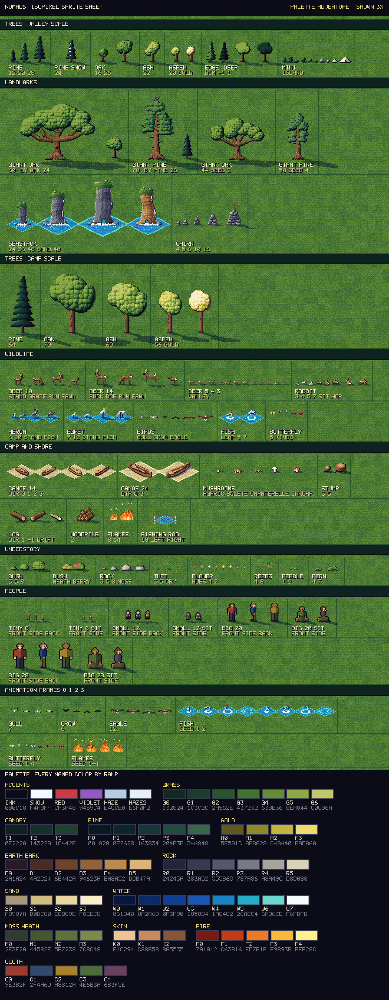
09Production and critique
Each production pass was reviewed like a paintover. What's wrong gets named, and the next pass fixes it.
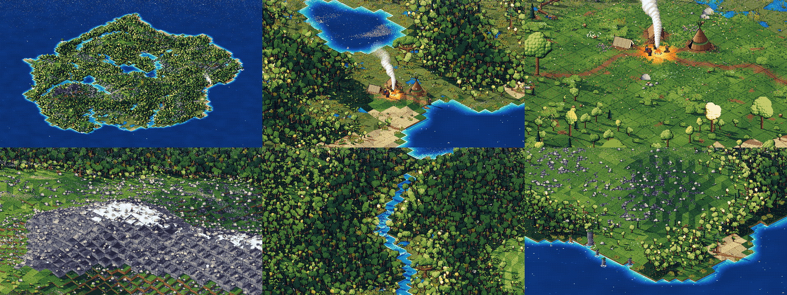
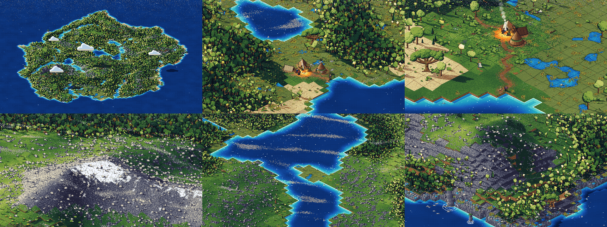
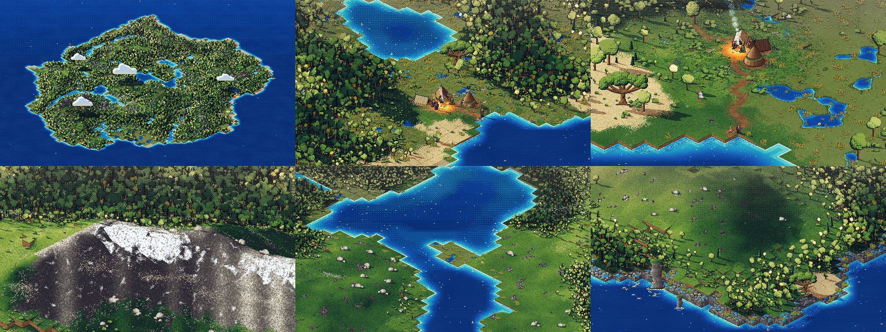
10Where it ended up
Six views of the same generated island. Every tree, rock, stream and lake is where the world data put it, and each view has a landmark to pull you in.
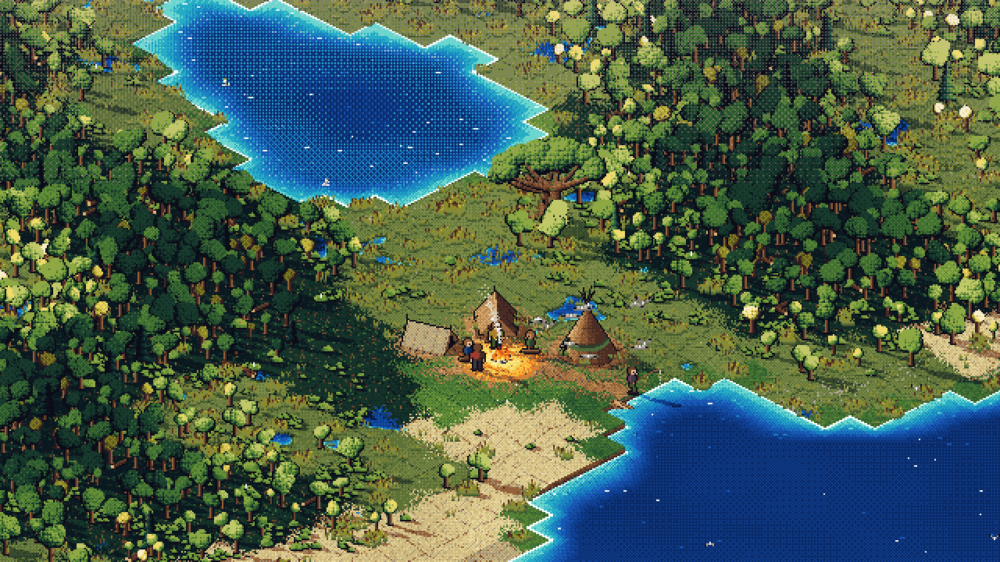
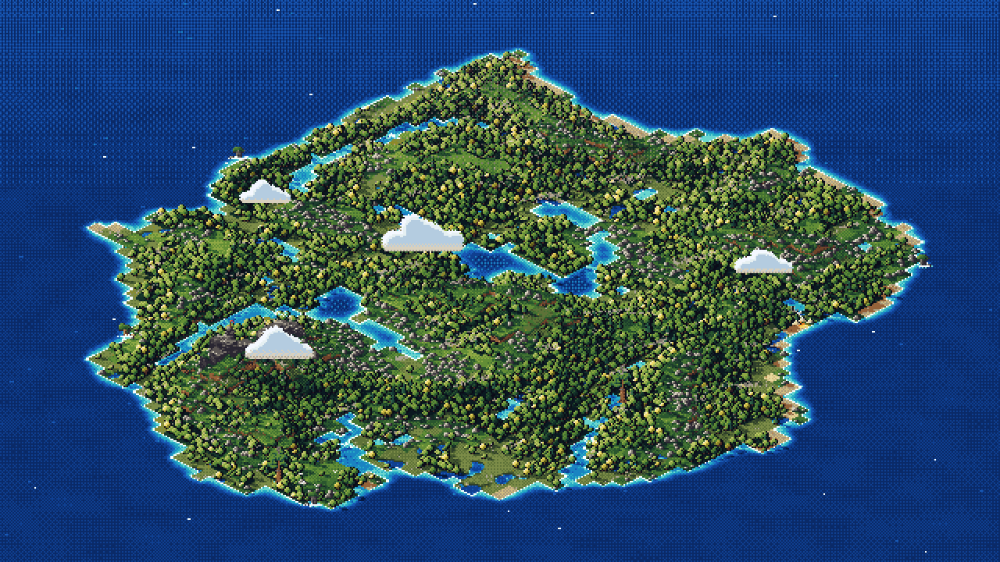
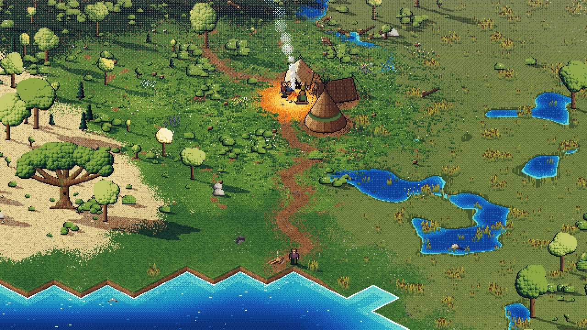
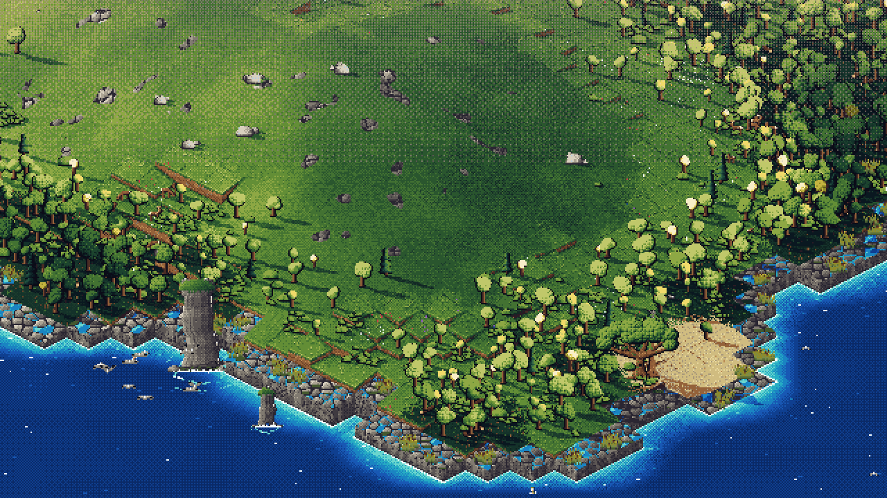
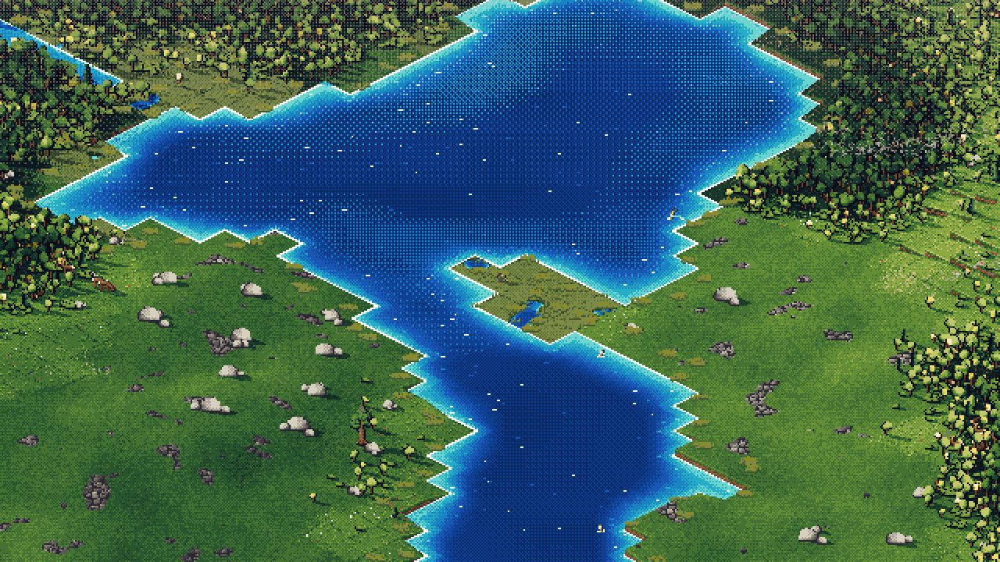
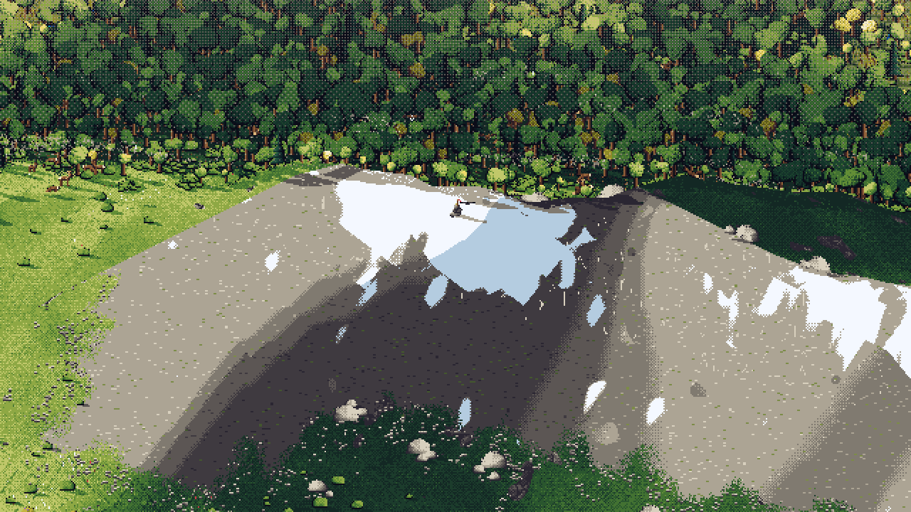
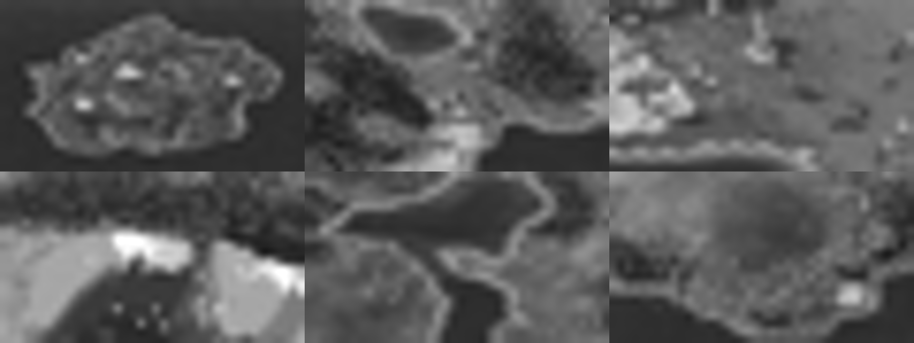
11It moves
Eight-frame loops. Water shimmer, foam, fire, smoke, birds and fish animate; the land holds still, as in Transport Tycoon.

12Open questions
- The peak works but is not yet a hero. A lower camera or a larger vertical scale would help it stand up.
- People are SimCity small, so at valley zoom they read as a flicker of color by the fire. That fits the brief, but it is worth a look.
- The seed matters. Seed 2 runs a stream through the camp, so camp placement should avoid water.
Live renderer (views: island, valley, camp, peak, lake, coast) · Sprite sheet · All styles